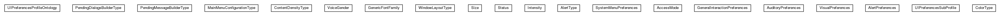

JavaScript is disabled on your browser.
Skip navigation links
Overview
Package
Class
Use
Tree
Deprecated
Index
Help
Prev Package
Next Package
Frames
No Frames
All Classes
Package org.universAAL.ontology.ui.preferences

Class Summary
Class
Description
AccessMode
AlertPreferences
AlertType
AuditoryPreferences
ColorType
ContentDensityType
GeneralInteractionPreferences
GenericFontFamily
Intensity
MainMenuConfigurationType
PendingDialogsBuilderType
PendingMessageBuilderType
Size
Status
SystemMenuPreferences
UIPreferencesProfileOntology
UIPreferencesSubProfile
VisualPreferences
VoiceGender
WindowLayoutType
Skip navigation links
Overview
Package
Class
Use
Tree
Deprecated
Index
Help
Prev Package
Next Package
Frames
No Frames
All Classes
Copyright © 2017
universAAL Consortium
. All Rights Reserved.